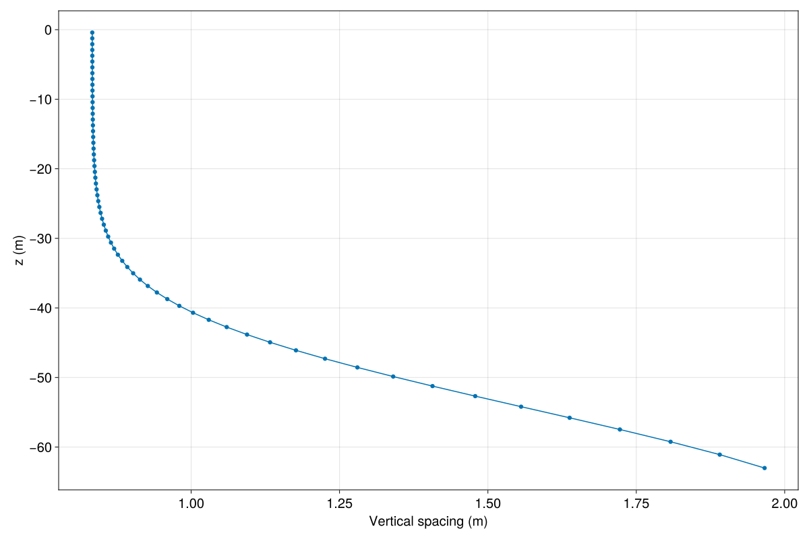
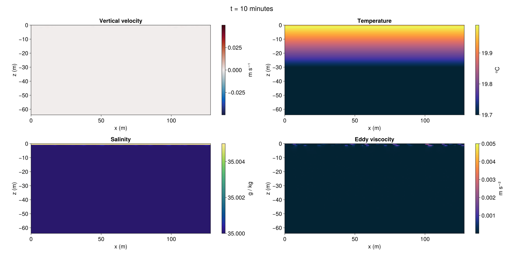

Wind- and convection-driven mixing in an ocean surface boundary layer
This example simulates mixing by three-dimensional turbulence in an ocean surface boundary layer driven by atmospheric winds and convection. It demonstrates:
- How to set-up a grid with varying spacing in the vertical direction
- How to use the
SeawaterBuoyancymodel for buoyancy withTEOS10EquationOfState. - How to use a turbulence closure for large eddy simulation.
- How to use a function to impose a boundary condition.
Install dependencies
First let's make sure we have all required packages installed.
using Pkg
pkg"add Oceananigans, CairoMakie, SeawaterPolynomials, CUDA"We start by importing all of the packages and functions that we'll need for this example.
using Oceananigans
using Oceananigans.Units
using CUDA
using Random
using Printf
using CairoMakie
using SeawaterPolynomials.TEOS10: TEOS10EquationOfStateThe grid
We use 128²×64 grid points with 1 m grid spacing in the horizontal and varying spacing in the vertical, with higher resolution closer to the surface. Here we use a stretching function for the vertical nodes that maintains relatively constant vertical spacing in the mixed layer, which is desirable from a numerical standpoint:
Nx = Ny = 128 # number of points in each of horizontal directions
Nz = 64 # number of points in the vertical direction
Lx = Ly = 128 # (m) domain horizontal extents
Lz = 64 # (m) domain depth
refinement = 1.2 # controls spacing near surface (higher means finer spaced)
stretching = 12 # controls rate of stretching at bottom
# Normalized height ranging from 0 to 1
h(k) = (k - 1) / Nz
# Linear near-surface generator
ζ₀(k) = 1 + (h(k) - 1) / refinement
# Bottom-intensified stretching function
Σ(k) = (1 - exp(-stretching * h(k))) / (1 - exp(-stretching))
# Generating function
z_interfaces(k) = Lz * (ζ₀(k) * Σ(k) - 1)
grid = RectilinearGrid(GPU(),
size = (Nx, Nx, Nz),
x = (0, Lx),
y = (0, Ly),
z = z_interfaces)128×128×64 RectilinearGrid{Float64, Periodic, Periodic, Bounded} on CUDAGPU with 3×3×3 halo
├── Periodic x ∈ [0.0, 128.0) regularly spaced with Δx=1.0
├── Periodic y ∈ [0.0, 128.0) regularly spaced with Δy=1.0
└── Bounded z ∈ [-64.0, 0.0] variably spaced with min(Δz)=0.833413, max(Δz)=1.96618We plot vertical spacing versus depth to inspect the prescribed grid stretching:
fig = Figure(size=(1200, 800))
ax = Axis(fig[1, 1], ylabel = "z (m)", xlabel = "Vertical spacing (m)")
lines!(ax, zspacings(grid, Center()))
scatter!(ax, zspacings(grid, Center()))
fig
Buoyancy that depends on temperature and salinity
We use the SeawaterBuoyancy model with the TEOS10 equation of state,
ρₒ = 1026 # kg m⁻³, average density at the surface of the world ocean
equation_of_state = TEOS10EquationOfState(reference_density=ρₒ)
buoyancy = SeawaterBuoyancy(; equation_of_state)SeawaterBuoyancy{Float64}:
├── gravitational_acceleration: 9.80665
└── equation_of_state: BoussinesqEquationOfState{Float64}Boundary conditions
We calculate the surface temperature flux associated with surface cooling of 200 W m⁻², reference density ρₒ, and heat capacity cᴾ,
Q = 200 # W m⁻², surface _heat_ flux
cᴾ = 3991 # J K⁻¹ kg⁻¹, typical heat capacity for seawater
Jᵀ = Q / (ρₒ * cᴾ) # K m s⁻¹, surface _temperature_ flux4.884283985946938e-5Finally, we impose a temperature gradient dTdz both initially (see "Initial conditions" section below) and at the bottom of the domain, culminating in the boundary conditions on temperature,
dTdz = 0.01 # K m⁻¹
T_bcs = FieldBoundaryConditions(top = FluxBoundaryCondition(Jᵀ),
bottom = GradientBoundaryCondition(dTdz))Oceananigans.FieldBoundaryConditions, with boundary conditions
├── west: DefaultBoundaryCondition (FluxBoundaryCondition: Nothing)
├── east: DefaultBoundaryCondition (FluxBoundaryCondition: Nothing)
├── south: DefaultBoundaryCondition (FluxBoundaryCondition: Nothing)
├── north: DefaultBoundaryCondition (FluxBoundaryCondition: Nothing)
├── bottom: GradientBoundaryCondition: 0.01
├── top: FluxBoundaryCondition: 4.88428e-5
└── immersed: DefaultBoundaryCondition (FluxBoundaryCondition: Nothing)Note that a positive temperature flux at the surface of the ocean implies cooling. This is because a positive temperature flux implies that temperature is fluxed upwards, out of the ocean.
For the velocity field, we imagine a wind blowing over the ocean surface with an average velocity at 10 meters u₁₀, and use a drag coefficient cᴰ to estimate the kinematic stress (that is, stress divided by density) exerted by the wind on the ocean:
u₁₀ = 10 # m s⁻¹, average wind velocity 10 meters above the ocean
cᴰ = 2e-3 # dimensionless drag coefficient
ρₐ = 1.2 # kg m⁻³, approximate average density of air at sea-level
τx = - ρₐ / ρₒ * cᴰ * u₁₀ * abs(u₁₀) # m² s⁻²-0.00023391812865497074The boundary conditions on u are thus
u_bcs = FieldBoundaryConditions(top = FluxBoundaryCondition(τx))Oceananigans.FieldBoundaryConditions, with boundary conditions
├── west: DefaultBoundaryCondition (FluxBoundaryCondition: Nothing)
├── east: DefaultBoundaryCondition (FluxBoundaryCondition: Nothing)
├── south: DefaultBoundaryCondition (FluxBoundaryCondition: Nothing)
├── north: DefaultBoundaryCondition (FluxBoundaryCondition: Nothing)
├── bottom: DefaultBoundaryCondition (FluxBoundaryCondition: Nothing)
├── top: FluxBoundaryCondition: -0.000233918
└── immersed: DefaultBoundaryCondition (FluxBoundaryCondition: Nothing)For salinity, S, we impose an evaporative flux of the form
@inline Jˢ(x, y, t, S, evaporation_rate) = - evaporation_rate * S # [salinity unit] m s⁻¹where S is salinity. We use an evaporation rate of 1 millimeter per hour,
evaporation_rate = 1e-3 / hour # m s⁻¹2.7777777777777776e-7We build the Flux evaporation BoundaryCondition with the function Jˢ, indicating that Jˢ depends on salinity S and passing the parameter evaporation_rate,
evaporation_bc = FluxBoundaryCondition(Jˢ, field_dependencies=:S, parameters=evaporation_rate)FluxBoundaryCondition: ContinuousBoundaryFunction Jˢ at (Nothing, Nothing, Nothing)The full salinity boundary conditions are
S_bcs = FieldBoundaryConditions(top=evaporation_bc)Oceananigans.FieldBoundaryConditions, with boundary conditions
├── west: DefaultBoundaryCondition (FluxBoundaryCondition: Nothing)
├── east: DefaultBoundaryCondition (FluxBoundaryCondition: Nothing)
├── south: DefaultBoundaryCondition (FluxBoundaryCondition: Nothing)
├── north: DefaultBoundaryCondition (FluxBoundaryCondition: Nothing)
├── bottom: DefaultBoundaryCondition (FluxBoundaryCondition: Nothing)
├── top: FluxBoundaryCondition: ContinuousBoundaryFunction Jˢ at (Nothing, Nothing, Nothing)
└── immersed: DefaultBoundaryCondition (FluxBoundaryCondition: Nothing)Model instantiation
We fill in the final details of the model here, i.e., Coriolis forces, and the AnisotropicMinimumDissipation closure for large eddy simulation to model the effect of turbulent motions at scales smaller than the grid scale that are not explicitly resolved.
model = NonhydrostaticModel(; grid, buoyancy,
tracers = (:T, :S),
coriolis = FPlane(f=1e-4),
closure = AnisotropicMinimumDissipation(),
boundary_conditions = (u=u_bcs, T=T_bcs, S=S_bcs))NonhydrostaticModel{GPU, RectilinearGrid}(time = 0 seconds, iteration = 0)
├── grid: 128×128×64 RectilinearGrid{Float64, Periodic, Periodic, Bounded} on CUDAGPU with 3×3×3 halo
├── timestepper: RungeKutta3TimeStepper
├── advection scheme: Centered(order=2)
├── tracers: (T, S)
├── closure: AnisotropicMinimumDissipation{ExplicitTimeDiscretization, @NamedTuple{T::Float64, S::Float64}, Float64, Nothing}
├── buoyancy: SeawaterBuoyancy with g=9.80665 and BoussinesqEquationOfState{Float64} with ĝ = NegativeZDirection()
└── coriolis: FPlane{Float64}(f=0.0001)Note: To use the Smagorinsky-Lilly turbulence closure (with a constant model coefficient) rather than AnisotropicMinimumDissipation, use closure = SmagorinskyLilly() in the model constructor.
Initial conditions
Our initial condition for temperature consists of a linear stratification superposed with random noise damped at the walls, while our initial condition for velocity consists only of random noise.
# Random noise damped at top and bottom
Ξ(z) = randn() * z / model.grid.Lz * (1 + z / model.grid.Lz) # noise
# Temperature initial condition: a stable density gradient with random noise superposed.
Tᵢ(x, y, z) = 20 + dTdz * z + dTdz * model.grid.Lz * 1e-6 * Ξ(z)
# Velocity initial condition: random noise scaled by the friction velocity.
uᵢ(x, y, z) = sqrt(abs(τx)) * 1e-3 * Ξ(z)
# `set!` the `model` fields using functions or constants:
set!(model, u=uᵢ, w=uᵢ, T=Tᵢ, S=35)Setting up a simulation
We set-up a simulation with an initial time-step of 10 seconds that stops at 2 hours, with adaptive time-stepping and progress printing.
simulation = Simulation(model, Δt=10, stop_time=2hours)Simulation of NonhydrostaticModel{GPU, RectilinearGrid}(time = 0 seconds, iteration = 0)
├── Next time step: 10 seconds
├── Elapsed wall time: 0 seconds
├── Wall time per iteration: NaN days
├── Stop time: 2 hours
├── Stop iteration: Inf
├── Wall time limit: Inf
├── Minimum relative step: 0.0
├── Callbacks: OrderedDict with 4 entries:
│ ├── stop_time_exceeded => 4
│ ├── stop_iteration_exceeded => -
│ ├── wall_time_limit_exceeded => e
│ └── nan_checker => }
├── Output writers: OrderedDict with no entries
└── Diagnostics: OrderedDict with no entriesThe TimeStepWizard helps ensure stable time-stepping with a Courant-Freidrichs-Lewy (CFL) number of 1.0.
wizard = TimeStepWizard(cfl=1, max_change=1.1, max_Δt=1minute)
simulation.callbacks[:wizard] = Callback(wizard, IterationInterval(10))Callback of TimeStepWizard(cfl=1.0, max_Δt=60.0, min_Δt=0.0) on IterationInterval(10)Nice progress messaging is helpful:
# Print a progress message
progress_message(sim) = @printf("Iteration: %04d, time: %s, Δt: %s, max(|w|) = %.1e ms⁻¹, wall time: %s\n",
iteration(sim), prettytime(sim), prettytime(sim.Δt),
maximum(abs, sim.model.velocities.w), prettytime(sim.run_wall_time))
add_callback!(simulation, progress_message, IterationInterval(40))We then set up the simulation:
Output
We use the JLD2Writer to save $x, z$ slices of the velocity fields, tracer fields, and eddy diffusivities. The prefix keyword argument to JLD2Writer indicates that output will be saved in ocean_wind_mixing_and_convection.jld2.
# Create a NamedTuple with eddy viscosity
eddy_viscosity = (; νₑ = model.diffusivity_fields.νₑ)
filename = "ocean_wind_mixing_and_convection"
simulation.output_writers[:slices] =
JLD2Writer(model, merge(model.velocities, model.tracers, eddy_viscosity),
filename = filename * ".jld2",
indices = (:, grid.Ny/2, :),
schedule = TimeInterval(1minute),
overwrite_existing = true)JLD2Writer scheduled on TimeInterval(1 minute):
├── filepath: ocean_wind_mixing_and_convection.jld2
├── 6 outputs: (u, v, w, T, S, νₑ)
├── array_type: Array{Float32}
├── including: [:grid, :coriolis, :buoyancy, :closure]
├── file_splitting: NoFileSplitting
└── file size: 63.4 KiBWe're ready:
run!(simulation)[ Info: Initializing simulation...
Iteration: 0000, time: 0 seconds, Δt: 11 seconds, max(|w|) = 1.2e-05 ms⁻¹, wall time: 0 seconds
[ Info: ... simulation initialization complete (25.588 seconds)
[ Info: Executing initial time step...
[ Info: ... initial time step complete (9.080 seconds).
Iteration: 0040, time: 7.000 minutes, Δt: 8.309 seconds, max(|w|) = 2.7e-05 ms⁻¹, wall time: 35.633 seconds
Iteration: 0080, time: 11.092 minutes, Δt: 4.944 seconds, max(|w|) = 6.8e-03 ms⁻¹, wall time: 36.229 seconds
Iteration: 0120, time: 13.923 minutes, Δt: 4.013 seconds, max(|w|) = 2.2e-02 ms⁻¹, wall time: 36.724 seconds
Iteration: 0160, time: 16.511 minutes, Δt: 4.218 seconds, max(|w|) = 2.5e-02 ms⁻¹, wall time: 37.282 seconds
Iteration: 0200, time: 19.211 minutes, Δt: 4.139 seconds, max(|w|) = 3.2e-02 ms⁻¹, wall time: 37.786 seconds
Iteration: 0240, time: 21.797 minutes, Δt: 4.059 seconds, max(|w|) = 2.8e-02 ms⁻¹, wall time: 38.298 seconds
Iteration: 0280, time: 24.317 minutes, Δt: 3.664 seconds, max(|w|) = 3.0e-02 ms⁻¹, wall time: 38.779 seconds
Iteration: 0320, time: 26.730 minutes, Δt: 3.533 seconds, max(|w|) = 2.7e-02 ms⁻¹, wall time: 39.288 seconds
Iteration: 0360, time: 29 minutes, Δt: 3.618 seconds, max(|w|) = 2.7e-02 ms⁻¹, wall time: 39.763 seconds
Iteration: 0400, time: 31.283 minutes, Δt: 3.360 seconds, max(|w|) = 3.0e-02 ms⁻¹, wall time: 40.281 seconds
Iteration: 0440, time: 33.450 minutes, Δt: 3.320 seconds, max(|w|) = 3.8e-02 ms⁻¹, wall time: 40.785 seconds
Iteration: 0480, time: 35.602 minutes, Δt: 3.071 seconds, max(|w|) = 3.1e-02 ms⁻¹, wall time: 41.294 seconds
Iteration: 0520, time: 37.619 minutes, Δt: 3.089 seconds, max(|w|) = 3.1e-02 ms⁻¹, wall time: 41.814 seconds
Iteration: 0560, time: 39.625 minutes, Δt: 3.232 seconds, max(|w|) = 3.2e-02 ms⁻¹, wall time: 42.359 seconds
Iteration: 0600, time: 41.725 minutes, Δt: 2.983 seconds, max(|w|) = 3.5e-02 ms⁻¹, wall time: 42.834 seconds
Iteration: 0640, time: 43.720 minutes, Δt: 3.024 seconds, max(|w|) = 4.0e-02 ms⁻¹, wall time: 43.353 seconds
Iteration: 0680, time: 45.704 minutes, Δt: 2.992 seconds, max(|w|) = 3.8e-02 ms⁻¹, wall time: 43.816 seconds
Iteration: 0720, time: 47.658 minutes, Δt: 2.981 seconds, max(|w|) = 4.1e-02 ms⁻¹, wall time: 44.308 seconds
Iteration: 0760, time: 49.595 minutes, Δt: 2.879 seconds, max(|w|) = 4.2e-02 ms⁻¹, wall time: 44.777 seconds
Iteration: 0800, time: 51.417 minutes, Δt: 2.660 seconds, max(|w|) = 5.0e-02 ms⁻¹, wall time: 45.279 seconds
Iteration: 0840, time: 53.134 minutes, Δt: 2.644 seconds, max(|w|) = 4.5e-02 ms⁻¹, wall time: 45.765 seconds
Iteration: 0880, time: 54.950 minutes, Δt: 2.935 seconds, max(|w|) = 5.3e-02 ms⁻¹, wall time: 46.277 seconds
Iteration: 0920, time: 56.739 minutes, Δt: 2.825 seconds, max(|w|) = 4.8e-02 ms⁻¹, wall time: 46.746 seconds
Iteration: 0960, time: 58.621 minutes, Δt: 2.800 seconds, max(|w|) = 4.8e-02 ms⁻¹, wall time: 47.260 seconds
Iteration: 1000, time: 1.007 hours, Δt: 2.733 seconds, max(|w|) = 4.2e-02 ms⁻¹, wall time: 47.746 seconds
Iteration: 1040, time: 1.036 hours, Δt: 2.729 seconds, max(|w|) = 4.9e-02 ms⁻¹, wall time: 48.275 seconds
Iteration: 1080, time: 1.066 hours, Δt: 2.661 seconds, max(|w|) = 5.3e-02 ms⁻¹, wall time: 48.741 seconds
Iteration: 1120, time: 1.095 hours, Δt: 2.714 seconds, max(|w|) = 4.7e-02 ms⁻¹, wall time: 49.251 seconds
Iteration: 1160, time: 1.125 hours, Δt: 2.702 seconds, max(|w|) = 4.8e-02 ms⁻¹, wall time: 49.738 seconds
Iteration: 1200, time: 1.155 hours, Δt: 2.692 seconds, max(|w|) = 4.5e-02 ms⁻¹, wall time: 50.239 seconds
Iteration: 1240, time: 1.183 hours, Δt: 2.700 seconds, max(|w|) = 4.4e-02 ms⁻¹, wall time: 50.708 seconds
Iteration: 1280, time: 1.213 hours, Δt: 2.605 seconds, max(|w|) = 4.6e-02 ms⁻¹, wall time: 51.231 seconds
Iteration: 1320, time: 1.241 hours, Δt: 2.636 seconds, max(|w|) = 5.3e-02 ms⁻¹, wall time: 51.710 seconds
Iteration: 1360, time: 1.270 hours, Δt: 2.625 seconds, max(|w|) = 5.2e-02 ms⁻¹, wall time: 52.214 seconds
Iteration: 1400, time: 1.299 hours, Δt: 2.675 seconds, max(|w|) = 5.0e-02 ms⁻¹, wall time: 52.721 seconds
Iteration: 1440, time: 1.328 hours, Δt: 2.555 seconds, max(|w|) = 4.7e-02 ms⁻¹, wall time: 53.217 seconds
Iteration: 1480, time: 1.355 hours, Δt: 2.476 seconds, max(|w|) = 5.1e-02 ms⁻¹, wall time: 53.716 seconds
Iteration: 1520, time: 1.383 hours, Δt: 2.625 seconds, max(|w|) = 5.1e-02 ms⁻¹, wall time: 54.171 seconds
Iteration: 1560, time: 1.412 hours, Δt: 2.613 seconds, max(|w|) = 5.3e-02 ms⁻¹, wall time: 54.675 seconds
Iteration: 1600, time: 1.440 hours, Δt: 2.473 seconds, max(|w|) = 5.5e-02 ms⁻¹, wall time: 55.167 seconds
Iteration: 1640, time: 1.467 hours, Δt: 2.447 seconds, max(|w|) = 5.9e-02 ms⁻¹, wall time: 55.659 seconds
Iteration: 1680, time: 1.493 hours, Δt: 2.588 seconds, max(|w|) = 6.7e-02 ms⁻¹, wall time: 56.141 seconds
Iteration: 1720, time: 1.521 hours, Δt: 2.534 seconds, max(|w|) = 6.2e-02 ms⁻¹, wall time: 56.633 seconds
Iteration: 1760, time: 1.547 hours, Δt: 2.292 seconds, max(|w|) = 6.1e-02 ms⁻¹, wall time: 57.085 seconds
Iteration: 1800, time: 1.571 hours, Δt: 2.460 seconds, max(|w|) = 6.1e-02 ms⁻¹, wall time: 57.580 seconds
Iteration: 1840, time: 1.598 hours, Δt: 2.341 seconds, max(|w|) = 6.8e-02 ms⁻¹, wall time: 58.054 seconds
Iteration: 1880, time: 1.624 hours, Δt: 2.553 seconds, max(|w|) = 6.3e-02 ms⁻¹, wall time: 58.578 seconds
Iteration: 1920, time: 1.652 hours, Δt: 2.511 seconds, max(|w|) = 5.4e-02 ms⁻¹, wall time: 59.063 seconds
Iteration: 1960, time: 1.679 hours, Δt: 2.341 seconds, max(|w|) = 5.1e-02 ms⁻¹, wall time: 59.560 seconds
Iteration: 2000, time: 1.705 hours, Δt: 2.415 seconds, max(|w|) = 5.8e-02 ms⁻¹, wall time: 1.000 minutes
Iteration: 2040, time: 1.732 hours, Δt: 2.459 seconds, max(|w|) = 5.2e-02 ms⁻¹, wall time: 1.008 minutes
Iteration: 2080, time: 1.757 hours, Δt: 2.435 seconds, max(|w|) = 5.1e-02 ms⁻¹, wall time: 1.016 minutes
Iteration: 2120, time: 1.784 hours, Δt: 2.378 seconds, max(|w|) = 5.1e-02 ms⁻¹, wall time: 1.025 minutes
Iteration: 2160, time: 1.809 hours, Δt: 2.173 seconds, max(|w|) = 5.8e-02 ms⁻¹, wall time: 1.033 minutes
Iteration: 2200, time: 1.833 hours, Δt: 2.406 seconds, max(|w|) = 6.2e-02 ms⁻¹, wall time: 1.041 minutes
Iteration: 2240, time: 1.860 hours, Δt: 2.417 seconds, max(|w|) = 6.4e-02 ms⁻¹, wall time: 1.049 minutes
Iteration: 2280, time: 1.886 hours, Δt: 2.453 seconds, max(|w|) = 5.6e-02 ms⁻¹, wall time: 1.058 minutes
Iteration: 2320, time: 1.912 hours, Δt: 2.396 seconds, max(|w|) = 5.6e-02 ms⁻¹, wall time: 1.066 minutes
Iteration: 2360, time: 1.939 hours, Δt: 2.359 seconds, max(|w|) = 5.5e-02 ms⁻¹, wall time: 1.075 minutes
Iteration: 2400, time: 1.965 hours, Δt: 2.425 seconds, max(|w|) = 5.5e-02 ms⁻¹, wall time: 1.082 minutes
Iteration: 2440, time: 1.991 hours, Δt: 2.328 seconds, max(|w|) = 5.5e-02 ms⁻¹, wall time: 1.091 minutes
[ Info: Simulation is stopping after running for 1.093 minutes.
[ Info: Simulation time 2 hours equals or exceeds stop time 2 hours.
Turbulence visualization
We animate the data saved in ocean_wind_mixing_and_convection.jld2. We prepare for animating the flow by loading the data into FieldTimeSeries and defining functions for computing colorbar limits.
filepath = filename * ".jld2"
time_series = (w = FieldTimeSeries(filepath, "w"),
T = FieldTimeSeries(filepath, "T"),
S = FieldTimeSeries(filepath, "S"),
νₑ = FieldTimeSeries(filepath, "νₑ"))(w = 128×1×65×121 FieldTimeSeries{InMemory} located at (Center, Center, Face) of w at ocean_wind_mixing_and_convection.jld2
├── grid: 128×128×64 RectilinearGrid{Float64, Periodic, Periodic, Bounded} on CPU with 3×3×3 halo
├── indices: (:, 64:64, :)
├── time_indexing: Linear()
├── backend: InMemory()
├── path: ocean_wind_mixing_and_convection.jld2
├── name: w
└── data: 134×1×71×121 OffsetArray(::Array{Float64, 4}, -2:131, 64:64, -2:68, 1:121) with eltype Float64 with indices -2:131×64:64×-2:68×1:121
└── max=0.0502294, min=-0.051005, mean=-1.59931e-5, T = 128×1×64×121 FieldTimeSeries{InMemory} located at (Center, Center, Center) of T at ocean_wind_mixing_and_convection.jld2
├── grid: 128×128×64 RectilinearGrid{Float64, Periodic, Periodic, Bounded} on CPU with 3×3×3 halo
├── indices: (:, 64:64, :)
├── time_indexing: Linear()
├── backend: InMemory()
├── path: ocean_wind_mixing_and_convection.jld2
├── name: T
└── data: 134×1×70×121 OffsetArray(::Array{Float64, 4}, -2:131, 64:64, -2:67, 1:121) with eltype Float64 with indices -2:131×64:64×-2:67×1:121
└── max=19.9958, min=0.0, mean=18.5886, S = 128×1×64×121 FieldTimeSeries{InMemory} located at (Center, Center, Center) of S at ocean_wind_mixing_and_convection.jld2
├── grid: 128×128×64 RectilinearGrid{Float64, Periodic, Periodic, Bounded} on CPU with 3×3×3 halo
├── indices: (:, 64:64, :)
├── time_indexing: Linear()
├── backend: InMemory()
├── path: ocean_wind_mixing_and_convection.jld2
├── name: S
└── data: 134×1×70×121 OffsetArray(::Array{Float64, 4}, -2:131, 64:64, -2:67, 1:121) with eltype Float64 with indices -2:131×64:64×-2:67×1:121
└── max=35.0129, min=0.0, mean=33.0007, νₑ = 128×1×64×121 FieldTimeSeries{InMemory} located at (Center, Center, Center) of νₑ at ocean_wind_mixing_and_convection.jld2
├── grid: 128×128×64 RectilinearGrid{Float64, Periodic, Periodic, Bounded} on CPU with 3×3×3 halo
├── indices: (:, 64:64, :)
├── time_indexing: Linear()
├── backend: InMemory()
├── path: ocean_wind_mixing_and_convection.jld2
├── name: νₑ
└── data: 134×1×70×121 OffsetArray(::Array{Float64, 4}, -2:131, 64:64, -2:67, 1:121) with eltype Float64 with indices -2:131×64:64×-2:67×1:121
└── max=0.0175071, min=0.0, mean=0.000403547)We start the animation at $t = 10$ minutes since things are pretty boring till then:
times = time_series.w.times
intro = searchsortedfirst(times, 10minutes)11We are now ready to animate using Makie. We use Makie's Observable to animate the data. To dive into how Observables work we refer to Makie.jl's Documentation.
n = Observable(intro)
wₙ = @lift time_series.w[$n]
Tₙ = @lift time_series.T[$n]
Sₙ = @lift time_series.S[$n]
νₑₙ = @lift time_series.νₑ[$n]
fig = Figure(size = (1800, 900))
axis_kwargs = (xlabel="x (m)",
ylabel="z (m)",
aspect = AxisAspect(grid.Lx/grid.Lz),
limits = ((0, grid.Lx), (-grid.Lz, 0)))
ax_w = Axis(fig[2, 1]; title = "Vertical velocity", axis_kwargs...)
ax_T = Axis(fig[2, 3]; title = "Temperature", axis_kwargs...)
ax_S = Axis(fig[3, 1]; title = "Salinity", axis_kwargs...)
ax_νₑ = Axis(fig[3, 3]; title = "Eddy viscocity", axis_kwargs...)
title = @lift @sprintf("t = %s", prettytime(times[$n]))
wlims = (-0.05, 0.05)
Tlims = (19.7, 19.99)
Slims = (35, 35.005)
νₑlims = (1e-6, 5e-3)
hm_w = heatmap!(ax_w, wₙ; colormap = :balance, colorrange = wlims)
Colorbar(fig[2, 2], hm_w; label = "m s⁻¹")
hm_T = heatmap!(ax_T, Tₙ; colormap = :thermal, colorrange = Tlims)
Colorbar(fig[2, 4], hm_T; label = "ᵒC")
hm_S = heatmap!(ax_S, Sₙ; colormap = :haline, colorrange = Slims)
Colorbar(fig[3, 2], hm_S; label = "g / kg")
hm_νₑ = heatmap!(ax_νₑ, νₑₙ; colormap = :thermal, colorrange = νₑlims)
Colorbar(fig[3, 4], hm_νₑ; label = "m s⁻²")
fig[1, 1:4] = Label(fig, title, fontsize=24, tellwidth=false)
fig
And now record a movie.
frames = intro:length(times)
@info "Making a motion picture of ocean wind mixing and convection..."
CairoMakie.record(fig, filename * ".mp4", frames, framerate=8) do i
n[] = i
end[ Info: Making a motion picture of ocean wind mixing and convection...
This page was generated using Literate.jl.